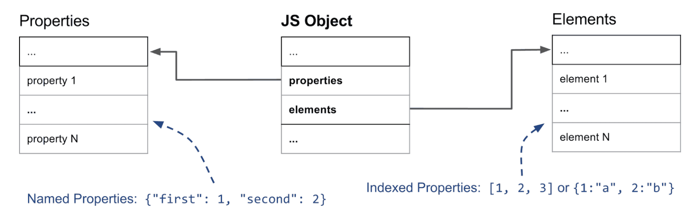
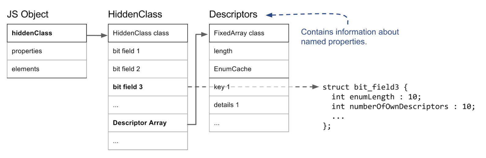
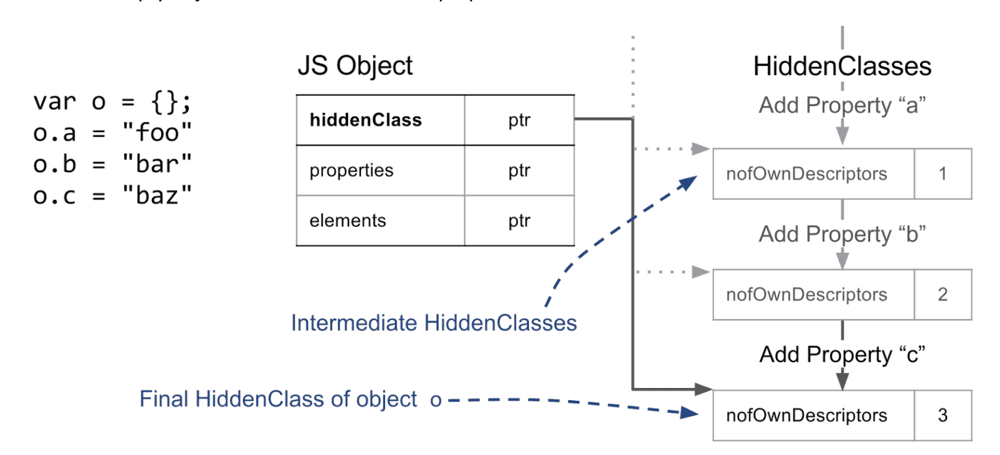
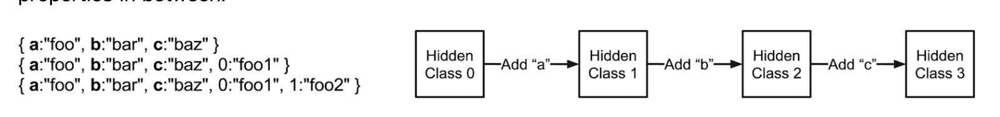
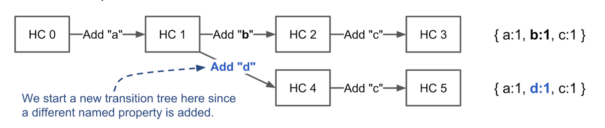
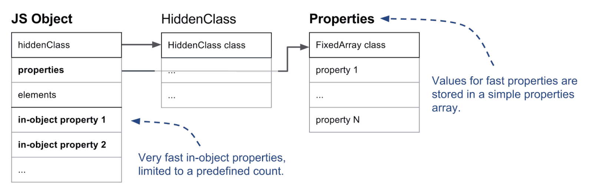
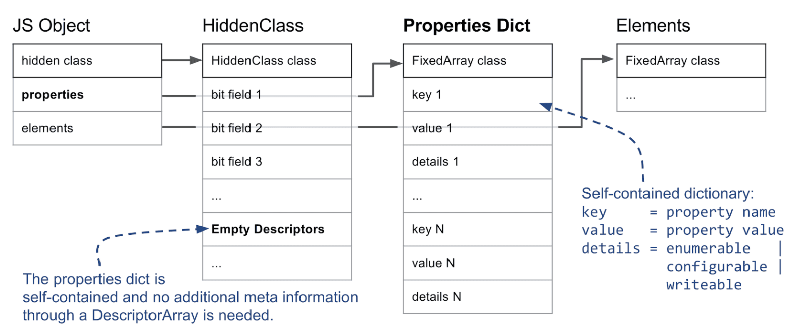
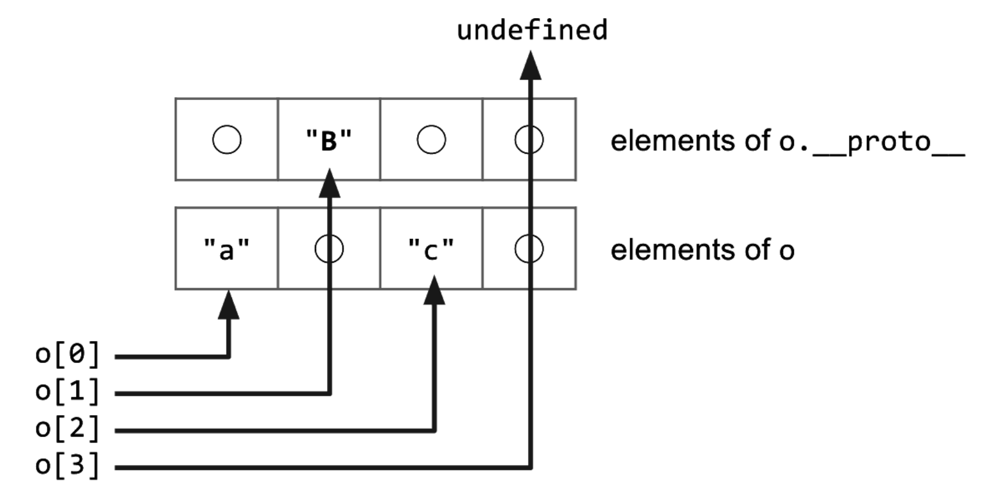
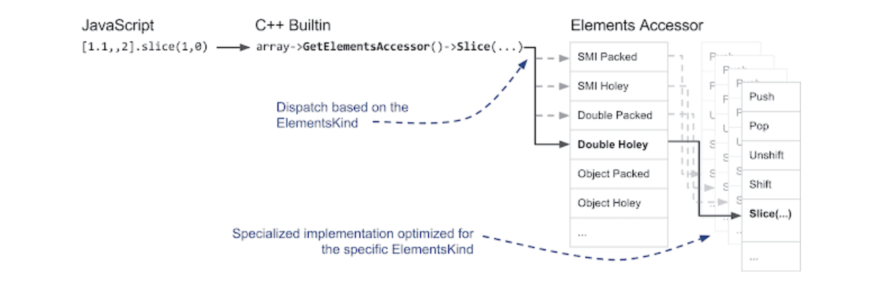

注：该文章翻译自 Fast properties in V8 V8 的关于对象属性内存分配策略的官方文章，文章有翻译的不是很清楚的地方，欢迎各位指正
在这篇博客文章中，我们将解释 V8 在内部是怎么处理 JavaScript properties 的。从 JavaScript 的角度来看，properties 只有几个必要的区别。JavaScript 对象与字典类似，使用 string 作为 key 和任意 object 作为 value。但是在对象的迭代过程中，规范对于以整数作为 index 的 properties 和其他 properties 的迭代方式是不同的。除此(迭代方式)之外，不同 properties 的表现基本相同，与它们是否以整数作为 index 无关。
但出于性能和内存的考虑，V8 底层确实依赖 properties 的几种不同表现。在这篇博客中，我们将解释为了能快速访问动态添加的 properties ，V8 是怎么做的。了解 properties 的工作方式对于解释 V8 中的内联缓存(inline caches)之类的优化工作至关重要。
这篇文章解释了 V8 对以整数作为 index 的 properties 和具名 properties 做处理的区别。然后我们展示了 V8 在添加具名 properties 时如何去维护隐藏类(HiddenClasses)，通过维护隐藏类可以快速识别一个对象的特征。接着我们将继续深入介绍如何根据用法优化具名 properties 来快速访问或修改。在最后一节中，我们将详细谈谈 V8 是怎么处理以整数作为 index 的 properties 或数组 index 的。
具名 properties 和 elements
让我们开始分析一个非常简单的对象，例如 { a：'foo', b：'bar' }。该对象具有两个具名 properties，'a' 和 'b'。对于 properties 名字来说它没有任何的数组 index。数组 index 这种 properties(通常称为 elements)是数组上最为突出的特点。例如数组 ['foo'，'bar'] 有两个数组 index properties：0，其对应 value 为 'foo'；1，其对应 value 为 'bar'。V8 主要用这个对 properties 做第一层的区分。
下图显示了一个基本的 JavaScript 对象在内存中的样子。

elements和properties存在两个单独的数据结构中，这样在不同使用模式下添加/访问 properties 和 elements 会更加有效。
elements主要用于各种 Array.prototype 方法，例如 pop 或 slice。鉴于这些函数是在连续范围内去访问 properties 的，在大多数情况下 V8 内部会把它们看作简单数组。在本文的稍后部分会说明，为了节省内存我们是怎么将这些简单数组转变成稀疏字典(sparse dictionary)的形式的。
具名 properties 以类似的方式存在单独的数组中。但与 elements 不同，我们不能简单地用 key 来推断它们在 properties 数组中的位置，我们需要一些其他元数据。在 V8 中，每个 JavaScript 对象都会关联一个隐藏类。隐藏类 存放了有关对象特征的信息，除此之外，还存放了 properties 名字 对应 properties 数组 index 的 map。为了使事情复杂化，有时我们使用字典而不是简单数组来表示 properties。我们将在专用部分中对此进行详细说明。
本节内容：
- 以整数作为 index 的数组的 properties 存在单独的 elements store中。
- 具名 properties存在properties store中。
- Elements和properties可以是数组或字典。
- 每个 JavaScript 对象都有一个关联的隐藏类，用于保存对象特征的信息。
隐藏类(HiddenClasses)和描述符数组(DescriptorArrays)
在解释了 elements 和 具名 properties 的常规区别之后，我们需要看一下隐藏类在 V8 中的工作方式。此隐藏类存了一个对象的元信息，包括对象上的属性数量以及对对象原型的引用。隐藏类在概念上类似于典型的面向对象编程语言中的类。但在基于原型的语言（例如 JavaScript）中，通常不可能预先知道这个类。因此在这种情况下，V8 会即时创建隐藏类，并随着对象的变化而动态更新。隐藏类用于标识对象特征，也对 V8 编译器的优化和内联缓存起到非常重要的作用。例如，如果优化编译器可以通过隐藏类确保兼容的对象结构，那么它就可以直接访问到对象的内联属性。
让我们来看看隐藏类的重要部分。

在 V8 中，JavaScript 对象的第一个字段指向隐藏类。(实际上，在 V8 堆上并由垃圾回收器管理的任何对象都是这种情况。)就 properties 而言，最重要的信息是位于 隐藏类的第三个 bit 的字段，这个字段用来存放 properties 的数量和能访问到描述符数组的指针。描述符数组中包含有关具名 properties 的信息，像这个 properties 的名字和 value 的存储位置之类的。注意，这里我们不跟踪整数 index properties，因此描述符数组中没有条目。
隐藏类的基本设定是对象具有相同的结构，例如在相同顺序下的相同具名 properties 会共享相同的隐藏类。为此，当对象添加了一个属性时，我们使用不同的隐藏类。在下面的示例中，我们创建一个空对象，并添加三个具名 properties。

每次添加新属性时，对象的隐藏类都会更改。V8 在后台创建一个将隐藏类连接在一起的转换树。当将属性 'a' 添加到空对象时，V8 知道要采用哪个隐藏类。如果以相同的顺序添加相同的属性，此转换树可确保在最后得到的隐藏类是相同的。以下示例表明，即使在两者之间添加简单的 index properties(也就是整数下标)，转换树也是一样没有变化。

但是，如果我们创建一个添加了其他属性的新对象，在本例中为属性 'd'，V8 将为新的隐藏类创建一个单独的分支。

本节内容：
- 具有相同结构(相同顺序的相同 properties)的对象具有相同的隐藏类。
- 默认情况下，每个添加的新具名属性都会导致创建新的隐藏类。
- 添加数组 index 的这种 properties 不会创建新的隐藏类。
三种不同的具名 properties
在概述了 V8 如何使用隐藏类记录对象的特征之后，让我们深入研究这些 properties 的实际存储方式。如上面引言中所述，properties 有两种基本类型：named 和 indexed。以下部分介绍具名 properties。
在 V8 中，像 {a: 1, b: 2} 这样的简单对象可以有不同的内部展示。虽然 JavaScript 对象表现得或多或少像外部的简单字典，但 V8 试图避免字典，因为它们妨碍某些优化，如内联缓存，我们将在单独的一篇文章中解释。
对象内 properties与普通 properties：V8 支持所谓的对象内 properties，这些属性直接存储在对象上。这些是 V8 中最快的属性，因为它们无需任何间接访问即可使用。对象内 properties 的个数由对象的初始大小确定。如果添加的 properties 所需要的空间比对象能存储的空间多，它们就会把这些 properties 存到 properties store 中。properties store 里的属性是能被间接访问到的，并且这个 properties store 可以自己增加 property。

快 properties与慢 properties：下一个重要区别是快 properties 与慢 properties 之间的区别。通常将线性 properties store 中存放的 properties 定义为 “快”。快 properties 仅通过 properties store 中的 index 访问。要得到在 properties store 中的具名 properties 的实际位置，我们必须参考隐藏类上的描述符数组，如前所述。

但如果一个对象添加和删除了许多属性，它可能会花费大量时间和内存开销来维护描述符数组和隐藏类。因此，V8 还支持所谓的慢 properties。具有慢 properties 的对象，它的 properties store 就是一个独立的字典。所有 properties 元信息不再存储在隐藏类的描述符数组中，而是直接存储在 properties 字典 中。因此不更新隐藏类也可以添加和删除属性。由于内联缓存不适用于字典属性，因此后者通常比快 properties 慢。
本节内容：
有三种不同的具名 properties 类型：对象内 properties、快 properties、慢 properties/字典 properties。
- 对象内 properties 直接存储在对象上，并提供最快的访问。
- 快 properties 位于 properties store 中，所有元信息都存储在隐藏类的描述符数组中。
- 慢 properties 位于独立的 properties 字典中，不再通过隐藏类共享元信息。
慢 properties 允许高效地删除和添加属性，但访问速度比其他两种类型慢。
elements 或数组 index properties
到目前为止，我们已经研究了具名 properties，而没讲数组常用的整数 index properties。整数 index properties 的处理与具名 properties 一样复杂。即使所有 index properties 总是单独存储在 elements store 中，那也有 20 种不同的 elements 类型!
Packed or Holey Elements：V8 作出的第一个主要区别是 elements backing store 里的 item 是 packed 的还是有 hole 的。如果删除一个能用 index 访问到的元素或未定义元素，则会在 backing store 中出现 hole。一个简单的例子是[1,,3]，其中第二项就是一个 hole。以下示例说明了此问题：
const o = ['a', 'b', 'c']; |

总之，如果这个被操作的数组/对象上没有属性，那就必须要在原型链上继续找。考虑到 elements 是独立的，我们不会在隐藏类上存放当前数组的 index properties 的信息，我们需要一个名为 the_hole 的特殊值来标记不存在的属性。这对于数组方法的性能来说至关重要。如果我们知道没有 hole，即 elements store 已经是 packed 状态，我们就可以执行本地操作而没必要在原型链上去做耗费性能的查找。
快 elements 或字典 elements：对 elements 来说，第二个主要区别是它们是快模式还是字典模式。快 elements 是简单的 VM 内部数组，它的属性 index 与 elements store 中的 index 有一个 map 的关系。但这种简单的形式对于非常大的 稀疏/holey 数组是非常浪费的，因为这些数组只有非常少的子项。在这种情况下，我们使用基于字典的形式来节省内存，但代价是访问速度稍慢：
const sparseArray = []; |
在此示例中，(从内存中)分配具有 10k 个子项的完整数组将非常浪费。取而代之的是，V8 创建了一个字典，在其中存储 key-value-descriptor 这样的三元组。在这种情况下，key 为 '9999'，value 为 'foo'，descriptor 就使用默认的描述符。鉴于我们没有办法在隐藏类上存储描述符详细信息，每当使用自定义描述符定义 index properties 时，V8 都会使用慢 elements：
const array = []; |
在此示例中，我们在数组上添加了一个不可配置的属性。此信息存储在慢 elements 字典三元组的描述符部分中。重要的是要注意，数组方法在具有慢 elements 的对象上执行时速度要慢得多。
Smi 和 Double Elements：在 V8 中快 elements 还有另一个重要的区别。例如，如果仅将整数存储在一个常用的数组中，则 GC 不必查看该数组，因为整数直接编码为所谓的小整数（Small integers – Smis）。另一个特殊情况是仅包含双精度的数组。与 Smis 不同，浮点数通常表示为占用几个字长的完整对象。但对于纯双精度数组来说 V8 存的是原始双精度值，以避免内存和性能开销。以下示例列出了 Smi 和 double 元素的 4 个示例：
const a1 = [1, 2, 3]; // Smi Packed |
特殊 elements：到目前为止，我们提供的信息涵盖了 20 种不同 elements 类型中的 7 种。为简单起见，我们去掉了定型数组(TypedArrays)中的 9 个 elements 类型，也去掉了多个 String wrapper 中的 elements 类型以及 arguments 对象中的多个特殊 elements 类型。
ElementsAccessor：如你所想我们并不想用 C++ 写数组方法 20 遍，为每个element 类型写一遍。这里就到了体现 C++ 神奇的地方了。我们构建了 ElementsAccessor，而不是一遍又一遍地实现数组方法，在这里我们只需要实现简单的函数即可访问 backing store 中的元素。ElementsAccessor 需要 CRTP 去对每个数组方法创建指定的版本。因此，如果在数组上调用诸如 slice 之类的方法，V8 内部则会调用用 C++ 编写的内置函数，并通过 ElementsAccessor 将其分派到该函数的指定版本：

本节内容：
- 有快模式和字典模式的 index properties 和 elements。
- 快 properties 可以被 packed，它们也可以有 holes，这些 holes 说明一些 index properties 被删掉了。
- elements 的 content 专门用于加快数组方法的执行并减少 GC 开销。
了解 properties 的工作方式是理解 V8 中许多优化的关键。对于 JavaScript 开发人员来说，有许多内部决策是无法直接看到的，但是它们解释了为什么某些代码模式比其他模式更快。更改 properties 或 elements 类型通常会使 V8 创建不同的隐藏类，这可能导致类型污染，从而 阻止 V8 生成最佳代码。